Feladat 1: Táblázatos riport¶
A feladat közösen megoldott.
Készíts egy új Report Server típusú projektet Visual Studioban:
- Indítsd el a Visual Studio-t.
- Válaszd a Create a new project opciót.
- Keresd meg a Report Server (nem a wizard!) projekt típust, és hozz létre egy új projektet.
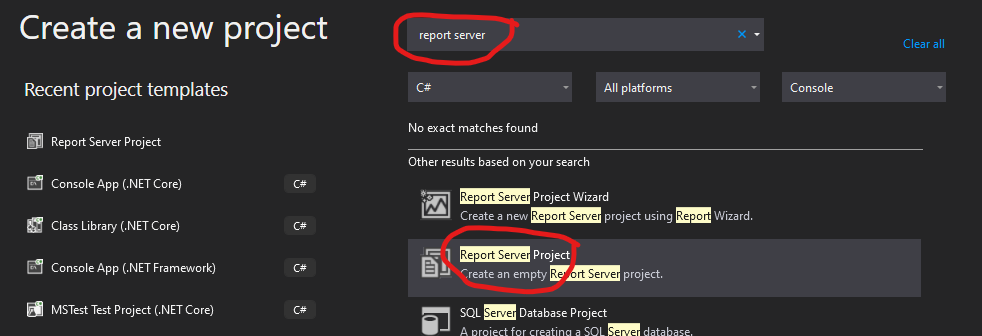
A Report Server projekt elsősorban úgynevezett Report Definition (.rdl) fájlokból áll, amelyek definiálják a riport előállításához szükséges adatforrásokat (lekérdezéseket), és a kinézet sablonját, amit adatokkal feltöltve kapjuk az eredmény riportot. A neve onnan ered, hogy ezeket a riportokat nem csak a fejlesztői gépen lehet lefuttatni, hanem egy un. Report Server-re publikálhatóak, ahonnan a vállalat megfelelő üzleti szereplői mindig friss riportokat kérhetnek, az aktuális adatok alapján. Mi ezen a laboron azonban csak a Visual Studio-ban fogjuk látni a riportot.
Hozzuk létre az első Report Definition fájlt.¶
- Solution Explorer-ben jobb klikk a Reports-ra és Add > New Item.
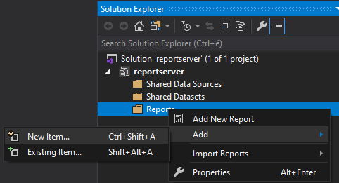
- A sablonok közül válasszuk a Report lehetőséget. Nevezzük el Sales Orders.rdl-nek, majd nyomjunk rá az Add-re. Ekkor megnyílik a Report Designer, ahol az új .rdl fájlt láthatjuk Design nézetben.
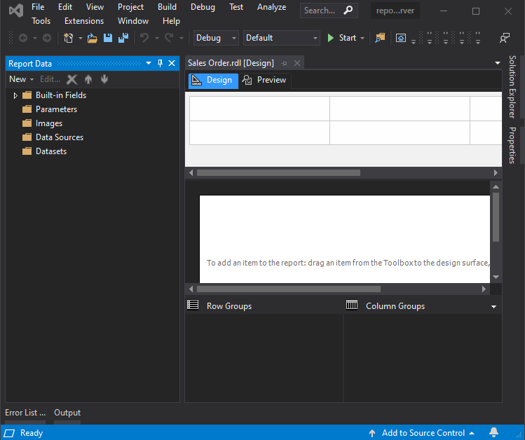
A Report Designer a fejlesztőfelületünk. Két nézete van: Design és Preview. Emellett a Report Data panel is megnyílik, itt lehet definiálni az adatforrásokat. Ha megvagyunk az adatforrások megadásával, a Design fülön tudjuk a riportot vizuálisan megtervezni, majd ha már kellőképpen előrehaladtunk a riport készítésével, a Preview fülön tudjuk kipróbálni.
Adatforrás (data source) beállítása¶
Az adatforrás definálja, a riport adatai honnan származnak. A mi esetünkben ez a korábban lérehozott SQL Server adatbázis lesz.
- A Report Data panelen New > Data Source. A neve legyen "AdventureWorks2014".
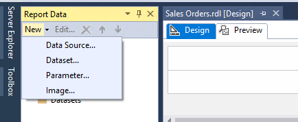
-
A megjelenő űrlapon válasszuk a Microsoft SQL Server típust és a connection string mező melletti gombra kattintva adjuk meg ismét az adatbázis elérését
-
Server name:
(localdb)\mssqllocaldb - Authentication:
Windows Authentication -
Select or enter database name:
AdventureWorks2014 -
OK-ézzuk le a dialógusokat. Majd nyissuk meg újra a Data Source tulajdonságait (jobb egérrel és Data Source Properties), és ellenőrizzük a Credentials fület, mert a Visual Studio néha "elfelejti" a beállítást. Az alábbi checkbox-nak kell kijelölve lennie:
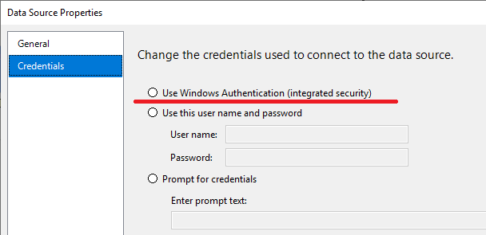
Adathalmaz (data set) megadása¶
Ahhoz, hogy riportokat készíthessük, az adatforráshoz adathalmazokat (dataset) is meg kell adnunk. Ez gyakorlatilag egy lekérdezést fog jelenteni az adatforrás felé.
- A Report Data panelen válasszuk a New > Dataset opciót. Nevezzük el a datasetet "AdventureWorksDataset"-nek. Data source-ot a legördülő menüből tudunk választani, használjuk az előzőleg elészítettet, és alkalmazzuk az alábbi beállításokat:
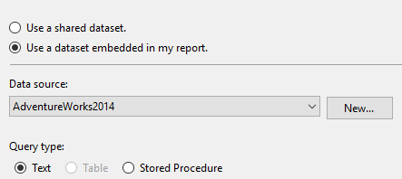
- Írjuk be a következő Query-t.
SELECT
soh.OrderDate AS [Date],
soh.SalesOrderNumber AS [Order],
pps.Name AS Subcat, pp.Name as Product,
SUM(sd.OrderQty) AS Qty,
SUM(sd.LineTotal) AS LineTotal
FROM Sales.SalesPerson sp
INNER JOIN Sales.SalesOrderHeader AS soh
ON sp.BusinessEntityID = soh.SalesPersonID
INNER JOIN Sales.SalesOrderDetail AS sd
ON sd.SalesOrderID = soh.SalesOrderID
INNER JOIN Production.Product AS pp
ON sd.ProductID = pp.ProductID
INNER JOIN Production.ProductSubcategory AS pps
ON pp.ProductSubcategoryID = pps.ProductSubcategoryID
INNER JOIN Production.ProductCategory AS ppc
ON ppc.ProductCategoryID = pps.ProductCategoryID
GROUP BY ppc.Name, soh.OrderDate, soh.SalesOrderNumber,
pps.Name, pp.Name, soh.SalesPersonID
HAVING ppc.Name = 'Clothing'
Ha megvagyunk, nyomjuk meg a Refresh fields gombot.
A többi fülön most nincs dolgunk, kattintsunk az OK-ra.
A) feladatrész - Táblázatos riport készítése¶
Most, hogy megvan a kapcsolatunk az adatbázis felé, és a lekérdezést is megírtuk, elkezdhetünk riportokat gyártani. A riport nem más, mint a lekérdezés eredménye megjelenítve táblázatokban, diagramokban.
-
Nyissuk meg a Toolbox panelt, ha még nem látszana (View menüben megtalálható).
-
Válasszuk ki a Table eszközt, majd a Design fül középső részén elhelyezkedő üres, fehér téglalapra "rajzoljunk" egy táblázatot, mintha csak egy négyszöget rajzolnánk Paintben:
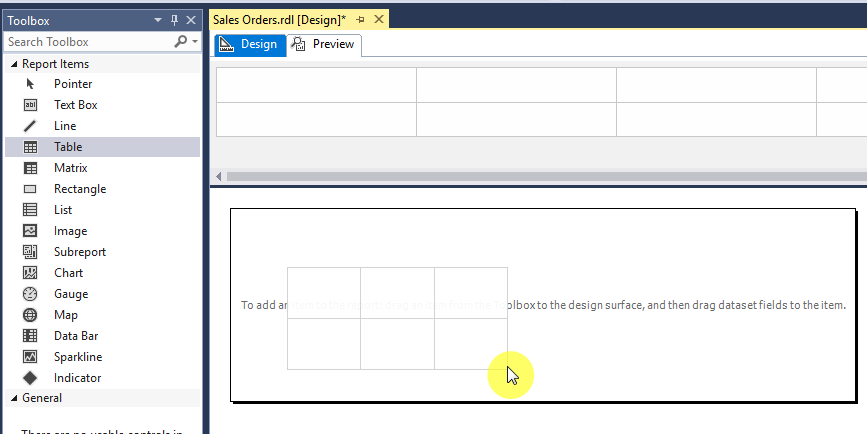
- Váltsunk vissza a Report Data panelre, és nyissuk le az AdventureWorksDataset-et.
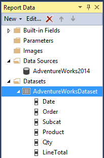
Ha ez üres vagy nem nyitható le, általában az a baj, hogy a dataset létrehozásakor nem nyomtuk meg a Refresh Fields gombot. Ezt még nem késő megtenni: jobb kattintás a dataseten > Dataset properties, majd a megjelenő ablakban nyomjuk meg a Refresh Fields gombot.
- A Date mezőt húzzuk rá az imént "rajzolt" táblázat első oszlopára. Ilyesmi eredményt kell kapjunk:
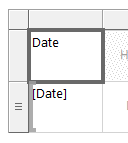
A második sorban látható
[Date]jelöli a kiértékelendő kifejezést, míg az eső sorban látható "Date" felirat lesz az oszlop fejléce a riportban – ez utóbbit át is írhatjuk.
- Az előbbi módszerrel húzzuk be a második oszlopba az Order, a harmadikba a Product mezőt. A Qty mezőt is húzzuk be a jobb szélső oszlop szélére úgy, hogy felengedés előtt egy + jelet lássunk az egérkurzor alatt, és egy függőleges kék vonalat a táblázat szélén. Így egy új, negyedik oszlopba fog kerülni a mező. Ugyanígy eljárva húzzuk be a LineTotal mezőt is ötödik oszlopnak.
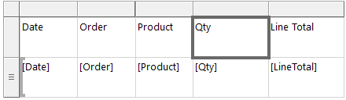
- Ezzel el is készült az első riportunk. Nézzük meg a Preview fülön. Elsőre kicsit lassan töltődik be, erre számítsunk. A továbbiakban már gyorsabb lesz!
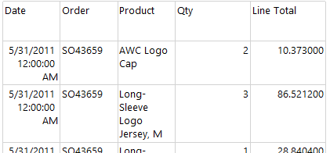
Az elkészült riportot például kinyomtathatjuk, vagy exportálhatjuk több féle formátumba (Word, Excel, PowerPoint, PDF). Jelen állapotában azért van rajta még mit csiszolni, pl. a végösszeg mezőnél nincs jelölve a valuta, és az értéket is bőven elég lenne 2 tizedesjelre kerekítve megmutatni. A dátum formázása és az oszlopok szélessége sem az igazi.
- Menjünk vissza a Design fülre, és a táblázatunkban kattintsunk jobb egérgombbal a
[Date]kifejezésen, majd válasszuk a Text Box Properties opciót. Itt a Number fülön válasszuk a Date kategóriát, és válasszunk ki egy szimpatikus dátumformátumot.
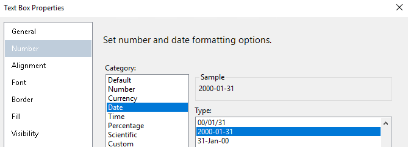
- A
[LineTotal]kifejezésen jobb klikkelve az előbbivel analóg módon a Text Box Properties-t kiválasztva formázzuk Number alatt Currency-ként az összeget.
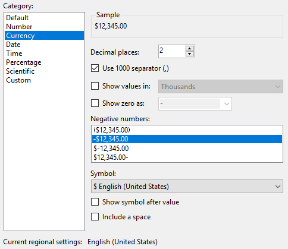
- A táblázat fejléc sor fölötti szürke téglalapok szélei fölé mozgatva az egeret a szokásos átméretező kurzor ikonokkal találkozhatunk. (Kb. mintha Excelben vagy Wordben próbálnánk táblázatot méretezni.) Ennek segítségével méretezzük át kicsit szélesebbre a táblázatot, és esetleg vegyük szűkebbre a Qty és Line Total oszlopokat a többihez képest.
Végül vastagítsuk ki a fejléc sor feliratait. Ehhez jelöljük ki a teljes sort a bal szélén található szürke négyzetre kattintva, majd a fenti eszköztáron kattintsunk a Bold gombra
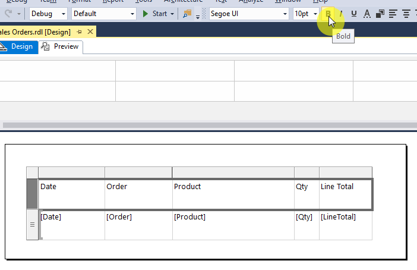
Ha ránézünk a Preview fülre, ilyesmit kell látnunk:
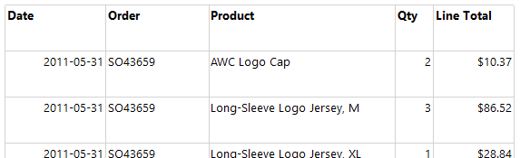
B) feladatrész - Csoportosítás és összegzés¶
A riport jelenleg ömlesztve tartalmazza az adatokat. Ezek eladási adatok, adott termékekből adott napon eladott mennyiség. Rendezzük csoportokba az adatokat.
-
Térjünk vissza a Design fülre. Győződjünk meg róla, hogy a táblázatunk alatt látjuk a Row Groups panelt – ha nem lenne ott, jobb klikkeljünk a dizájn felületen, és a View menüben pipáljuk ki a Grouping opciót.
-
A Report Data panelről húzzuk a Date mezőt a Row Groups panelre, azon belül is a (Details) sor fölé.
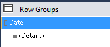
A táblázatunk megjelenése a következőképpen fog változni:
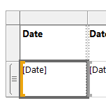
- Húzzuk az Order mezőt is a Row Groups panelre a Date és a (Details) közé.
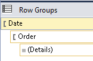
- A csoportként megadott elemeknek automatikusan létrehozott oszlopokat a táblázatban a rendszer. Mivel már korábban is felvettük őket, ezért most kétszer is szerepelnek; töröljük őket. A felettük található szürke téglalapra kattintva jelöljük ki a jobb oldali Date és Order oszlopokat, és töröljük ki őket (jobb kattintás és Delete Columns).
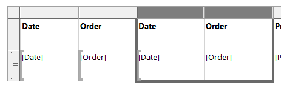
Az új Date oszlop formátuma ezzel visszaállt az eredeti formátumra, de a Text Style Properties segítségével újra be tudjuk állítani.
Ha most megnézzük a Preview fület, láthatjuk, hogy az általunk megadott szempontok szerint (és az általunk megadott sorrendben) csoportosításra kerülnek a riport sorai.
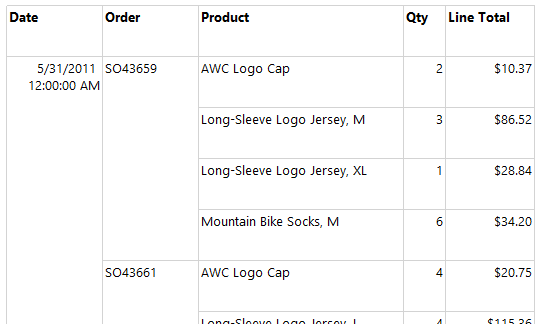
- Váltsunk vissza Design nézetre. Kattintsunk jobb egérgombbal a
[LineTotal]cellára, és válasszuk az Add Total opciót. Ezzel az egyes Order-ekhez (amik mentén csoportosítottunk) meg fog jelenni a rendelések összege. Ehhez alapból nem rendelődik címke, de beírhatunk egyet: bal gombbal kattintsunk a megfelelő üres cellába, és írjuk be: "Order Total"
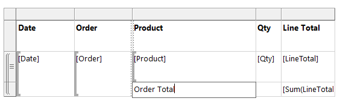
- CTRL billentyűt nyomva tartva kattintsunk az Order Total cellájára, majd a tőle jobbra levő két cellára is, hogy kijelöljük őket, és a Format menüből válasszunk új háttérszínt nekik.
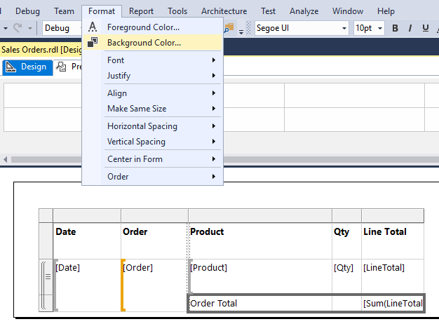
- Az eredményt szokás szerint megnézhetjük a Preview fülön:
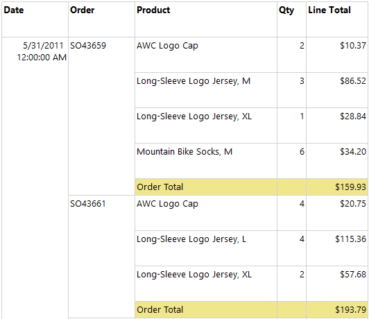
-
Készítsünk napi összegzést is!
-
Váltsunk vissza Design nézetre
- Jobb klikk az
[Order]cellán, válasszuk az Add Total > After lehetőséget. - Az
[Order]cella alatt megjelenik egy "Total" feliratú cella. Kattintsunk bele, és írjuk át "Daily Total"-ra. -
Válasszuk ki ezt a cellát, és mellette a másik hármat (pl. a CTRL nyomvatartása mellett végigkattintgatva őket), majd adjunk nekik valamilyen háttérszínt (Format > Background color).
-
Mivel az adatbázisban egy naphoz nagyon sok megrendelés is tartozhat, a Preview fülön akár 4-5 oldalt is le kell görgetni, mire megpillantjuk munkánk gyümölcsét:
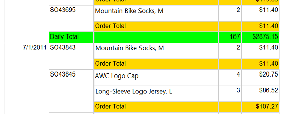
Következő feladat¶
Folytasd a következő feladattal.